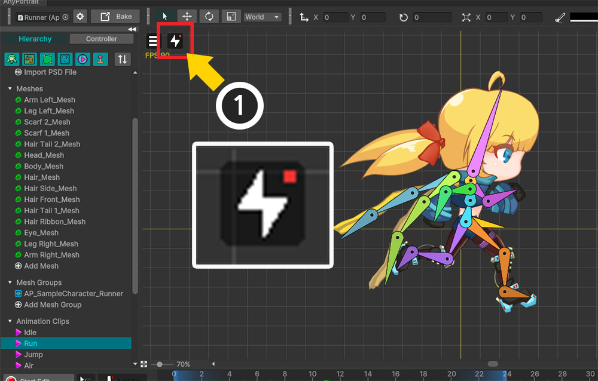

AnyPortrait > Manual > Performance issue in Unity 2023
Performance issue in Unity 2023
1.4.8
Unity 2023 is a version with significant changes in design and functionality compared to the previous version.
Our team is also carefully looking into compatibility with AnyPortrait.
We hope everything works well, but unfortunately, our team has discovered a performance issue that is unique to this version.
Conditions that may cause performance issues include:
(1) Open AnyPortrait editor as a separate window.
(2) With the Unity Editor and AnyPortrait Editor open, select another program (e.g. Internet browser, etc.) to move the window focus.
(3) When you return to the AnyPortrait editor, the performance drops significantly.
Although our team has not been able to pinpoint the exact cause of this issue, we have tested and implemented a feature to detect performance degradation and a feature to resolve the issue.
On this page, you can see how performance drops and how to fix them when you encounter them.

This is the screen where we ran AnyPortrait in Unity 2023 and opened a character from the demo scene.
Let's run the profiler in this state.

If you run the profiler, you can see that it is still operating normally without any major performance issues.
(To show performance issues, only the "Scripts" and "Others" items were enabled.
Without closing the editor, let's briefly select an external program window and then return.

If you return to the AnyPortrait editor, you will see that the "Others" item frequently operates with very poor performance.
This item is presumed to be processed when the Unity editor is in a standby state, but the process is still repeated even after returning to the AnyPortrait editor, significantly reducing performance.

When performance degradation is detected, as seen in the Profiler, a new "Performance Recovery Button" will automatically appear next to the View menu.
This button solves performance issues by making the editor "wake up".
Let's press this button and check out the profiler.

If you press the Performance Recovery Button, you can check in the profiler that it is restored to normal.
The Performance Recovery Button appears only when performance degradation is detected for a certain time, so if the button does not appear, just wait a bit.
To prevent the Performance Recovery Button from appearing frequently, the button does not appear again for 10 seconds after pressing it.
This feature does not work in Unity 2022 or earlier as no performance issues have been found.
The exact cause of this issue has not yet been determined.
If the issue is not resolved, please contact our team!